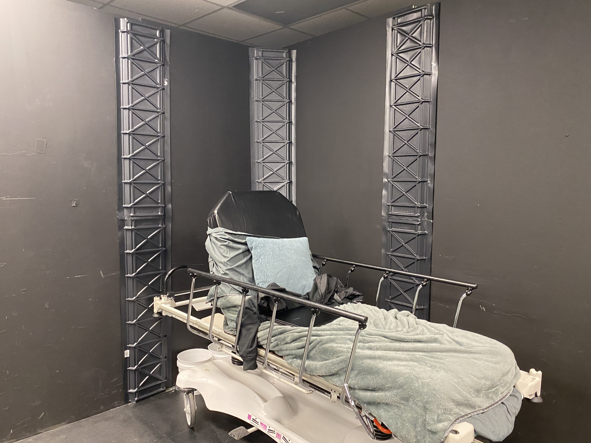
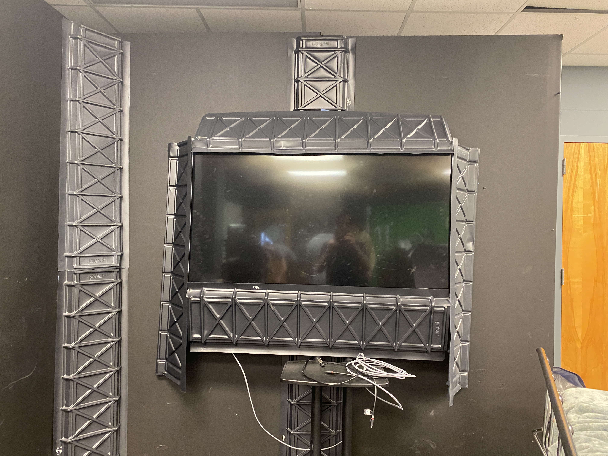
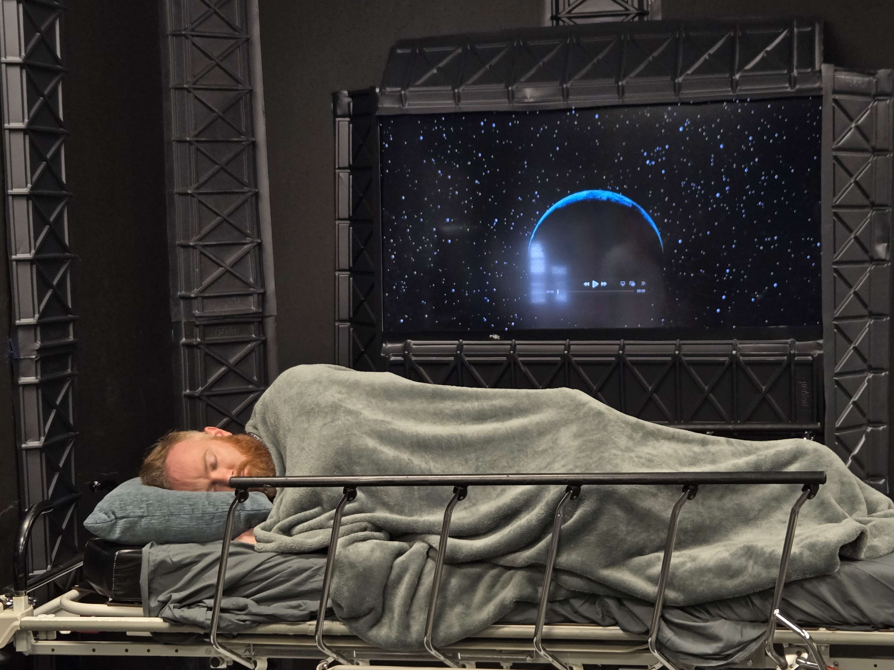
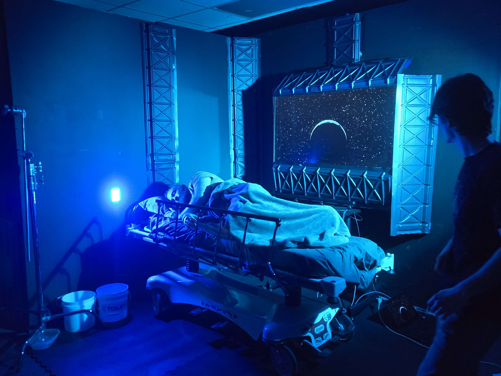
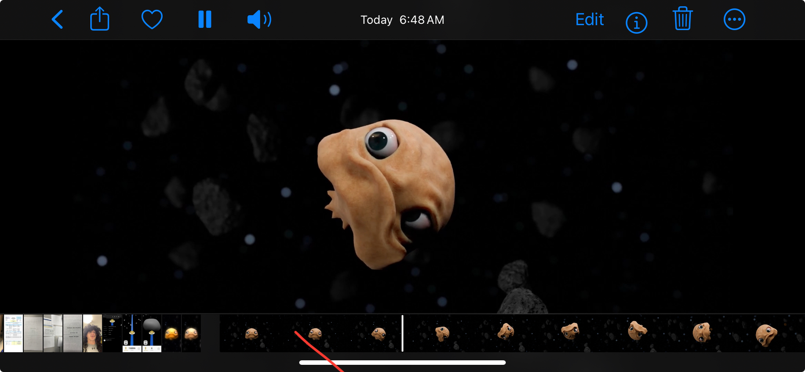

Tracking and compositing footage onto a real-world screen is the bane of my existence, so I opted to use in-camera VFX for any necessary cases.
I really love this approach because it enables the actor to actually react to the footage and use it to fuel their performance.
Every sci-fi movie needs a 2001 reference. Ray's apartment view is based on the opening shot of the sun rising behind Earth.
The Earth model is a custom shader with a procedural terrain and atmosphere. The sun is just an emissive blue sphere with a heavy bloom filter applied over the scene.
This scene was played on a loop on a TV monitor in the equipment room we filmed in.
His bed is a medical gurney that my film club inherited for free.
The greebles of his apartment are just taped-together rafter vent panels from Home Depot.
   The video Ray watches on his phone in the intro was finished rendering at 2am the night before the shoot.
I made 3 variations with different levels of VHS-style filtering.
Bubby the Lub was sculpted in Blender, and the eye movement was made just by constraining them to face a hidden object that I moved around the scene.
I made the Tachyon Maps overlay in Figma, based off the UI of actual navigation apps.
All the other logos in the film were also made in Figma.
The 3D scene was rendered in Blender using custom cell-shaded toon shaders.